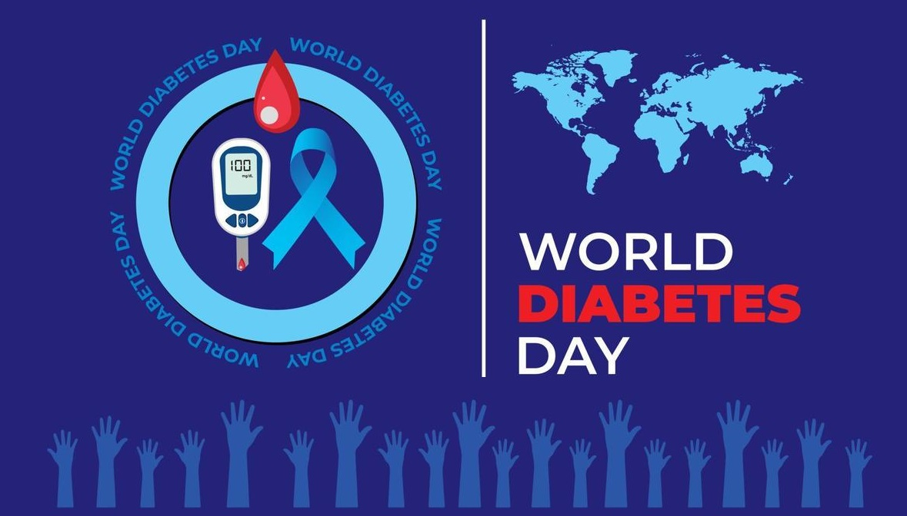

Diabetes Prediction using Python
This dataset originates from the National Institute of Diabetes and Digestive and Kidney Diseases. Its primary aim is to predict diagnostically whether a patient has diabetes using specific diagnostic measurements included in the dataset.
Comprising females of Pima Indian heritage aged over 21, the dataset encompasses various independent medical predictors alongside the dependent variable 'Outcome'.
Tools used:
- Python
- Numpy
- Pandas
- Matplotlib
- Seaborn
Steps taken:
- Data Read/Lead.
- Data Exploration.
- Data Visualization.
- Training the model.
- Model evaluation.
Key findings:
- Age and BMI/Blood Pressure Relationship: BMI increase correlated with higher blood pressure.
- Insulin and Glucose by Age: Gradual increases between ages 25-50, a significant rise from 50-56, a spike at ages 59-60, and a dip at age 70.
- Diabetes Prevalence by Age: Older individuals showed a higher prevalence of diabetes, especially in the 20-50 age range.
Download report in PDF format.